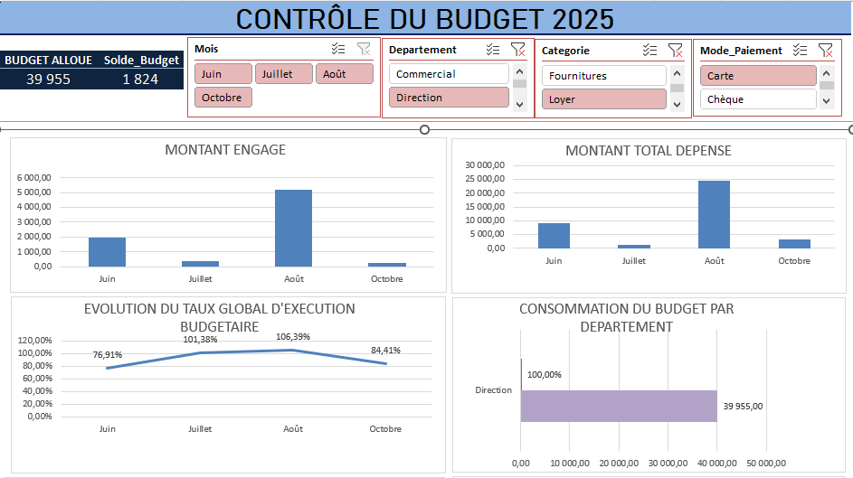
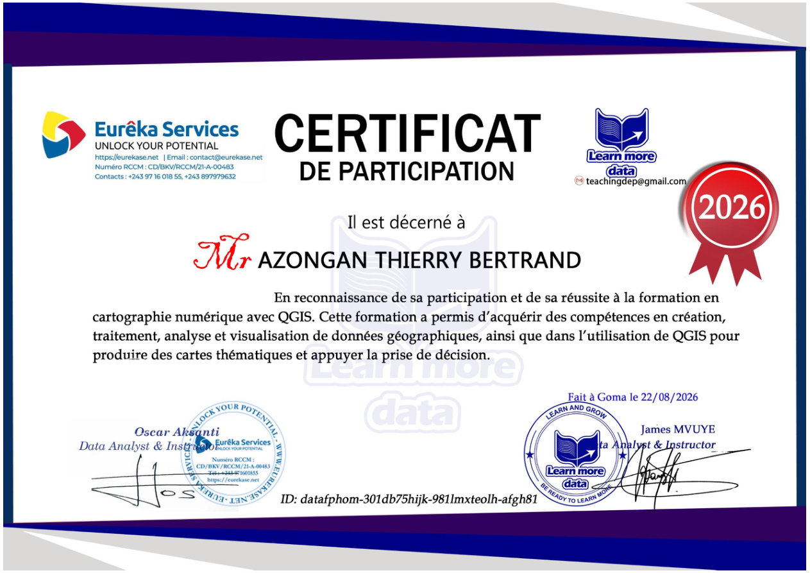

Bonjour, je suis Thierry Bertrand AZONGAN
Data Analyst & Statisticien
J’exploite les données pour comprendre la performance, mesurer les indicateurs clés et éclairer la prise de décision. Mon expérience associe analyse des ventes, statistiques, reporting et conception de tableaux de bord. J’utilise notamment Excel, SQL, Power BI, R et Python pour transformer les données en informations exploitables.
Données → Analyse → Décision
QUI SUIS-JE ?
À propos de moi
Un profil à la croisée de la statistique, de la finance et de la Business Intelligence.
Transformer les données en informations utiles
J’ai construit mon expérience autour du suivi des activités commerciales, de l’analyse des ventes, du contrôle des indicateurs et du reporting.
Dans mes fonctions, j’ai notamment contribué à structurer les flux de données, suivre les performances, produire des statistiques et concevoir des tableaux de bord interactifs avec Excel et ses outils d’automatisation.
Je poursuis le développement de mes compétences en SQL, R, Power BI et analyse statistique afin de proposer des analyses fiables, compréhensibles et orientées vers l’action.
Télécharger mon CV (PDF) ↗“
La valeur d’une donnée se révèle lorsqu’elle devient une information utile à la décision.
MON SAVOIR-FAIRE
Compétences techniques
Outils et méthodes mentionnés dans mon parcours et illustrés par les travaux présentés.
Microsoft Excel
Analyse, formules avancées, tableaux croisés dynamiques, tableaux de bord, macros et VBA, Power Query et Power Pivot.
SQL & MySQL
Interrogation de bases relationnelles, filtrage, agrégation, regroupement et analyse de données clients.
Power BI
Conception de tableaux de bord de ventes, suivi des indicateurs et visualisation interactive des performances.
Python
Premiers outils de programmation pour structurer, nettoyer et analyser des données, avec une progression vers l’analyse exploratoire et l’automatisation.

R & RStudio
Statistiques descriptives, tableaux croisés, tests du Khi-deux, corrélations et visualisations statistiques.
Σ
Outils statistiques
Utilisation d’outils d’analyse statistique et de collecte : STATA, SPSS, Epi Info, ODK Collect et Google Forms.
Cartographie & gestion
Formation en analyse de données spatiales avec QGIS ; expérience des outils de gestion et de reporting, dont SAGE 100 Cloud.
TRAVAUX SÉLECTIONNÉS
Mes projets Data
Des réalisations accompagnées de captures, de fichiers sources et de résultats interprétables.

EXCEL · APERÇUAnalyse et pilotage du budget 2025
Analyse de 1 357 opérations financières et conception d’un tableau de bord interactif pour suivre les budgets prévus, les montants engagés et dépensés, les soldes et les taux d’exécution par mois, département, catégorie et mode de paiement.
Analyse d’une base de données clients
Un ensemble de 15 requêtes sur une base clients : recherche par critères, filtres textuels avec LIKE, comptages, regroupements par ville, conditions HAVING et classement des résultats.
Analyse et pilotage des ventes
Deux tableaux de bord Power BI consacrés à la performance commerciale : chiffre d’affaires, volumes vendus, transactions, segments, canaux, régions, secteurs, produits et principaux clients.


Activité physique et indicateurs de santé cardiovasculaire
Étude de 450 observations portant sur l’activité physique, l’hypertension artérielle (HTA), le diabète et d’autres facteurs de santé. Les tableaux croisés et tests du Khi-deux examinent les associations entre activité physique et HTA (p = 0,867) ainsi qu’entre activité physique et diabète (p = 0,940). Dans cet échantillon, aucune association statistiquement significative n’est mise en évidence au seuil de 5 %.
Le projet comprend aussi des statistiques descriptives, des graphiques et l’étude de la relation entre l’âge et la tension systolique.
EXPÉRIENCE PROFESSIONNELLE
Mon expérience
Une expérience professionnelle construite autour des données, des ventes et du suivi de la performance.
Expériences professionnelles
Analyste des ventes · ILBB Sarl
Gestion des flux de données des entrepôts, analyse des ventes, suivi des segments commerciaux, conception de tableaux de bord et suivi des prises de carburant en logistique.
Assistant administratif et statistiques · DONCAGO S.A
Suivi des indicateurs commerciaux, statistiques des ventes, reportings périodiques, tableaux de bord avec macros et VBA Excel, facturation et mouvements de stock dans SAGE.
Chargé de la statistique et du recouvrement · Optima Afrique
Gestion de la base clients, suivi des indicateurs de recouvrement, analyse des performances et synthèse des rapports d’activité.
Expériences en banque et collecte de données
Conseiller clientèle chez Diamond Bank et agent de saisie de données pour Abt Associates / PMI Africa : enquêtes, contrôle qualité, apurement et actualisation des bases.
APPRENTISSAGE CONTINU
Certifications & formations
Les attestations présentes dans les documents transmis.

22 août 2026 · Goma
Analyse des données spatiales avec QGIS
Formation en cartographie numérique : création, traitement, analyse et visualisation de données géographiques et production de cartes thématiques.
Consulter le certificat ↗25 septembre 2023 · Abomey-Calavi
Suivi-évaluation des projets et programmes
Certificat de formation délivré par l’African School of Economics.
Consulter le certificat ↗ÉCHANGEONS
Construisons quelque chose ensemble
Pour une opportunité professionnelle, une collaboration ou un projet d’analyse de données, vous pouvez me joindre directement.